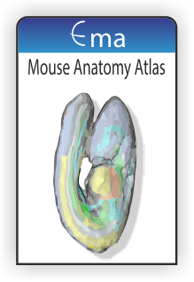
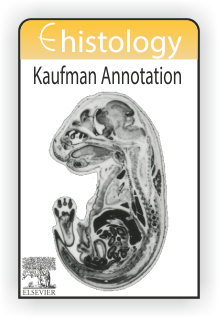
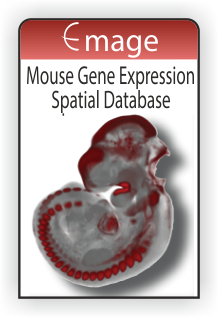
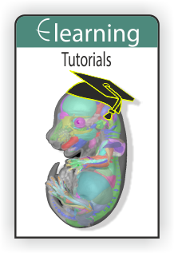

Introduction
The emouseatlas.org website and resource are no longer available. The resource has been maintained for 8 years post funding but is no longer sustainable and finally fell foul of the 2026 PHP security issues. Before funding ceased in 2018 and in the following years virtually all of the underlying data has been archived and is available from the University of Edinburgh DataShare and DataVault archives. The data held in DataShare is fully open access and is maintained indefinitely, the data in DataVault is freely available on request and maintained at least until 2033.
Mouse Atlas data and resouces that are available from DataShare, DataVault and other web-resources are listed below under the headings of the original web-site home page. The top-level location for the data held in DataShare is the e-Mouse Atlas Community page.
The Mouse Atlas Anatomy Atlas provided viewers for the 3D embryo models for each stage, viewers for the high-resolution section images used to develop the models, an interactive viewer for the embryo anatomy ontology, links providing information about embryo staging and links to movies of each embryo. Links to free download of these data are provided here with an additional link to a tutorial video on how to visualise the data on your own machine using ITK-Snap. | |||||||||||||||||||
 |
|
||||||||||||||||||
The eHistology Atlas with Kaufman Annotations is based on the “Atlas of Mouse Development” (Kaufman 1992) and additional coronal sections published in the later Supplement to this Atlas (Baldock et al, 2016; Morris-Kay and Srinivas, 2024) in a collaboration with Academic Press/Elsevier. The histological sections used for the original atlas have been scanned at high-resolution and provided online with the annotations transferred from the printed volume. Each high resoluton section image can be indiviually downloaded along with data files definingIn addition the eHistology atlas browser has been transferred to the HDBR Atlas resource in Newcastle who are hosting all of the Kaufman Atlas and Supplement images using the same annotaions as provided in the books. These can be accessed interactively as well as similar series for the human embryo. Finally the Placenta Atlas developed as part of the Wellcome DMDD project are also published on the HDBR website. | ||||||||||||||||
 |
|
|||||||||||||||
 |
Work in progress - content to be added.. |
 |
|
| Additional Links and Resources |
|